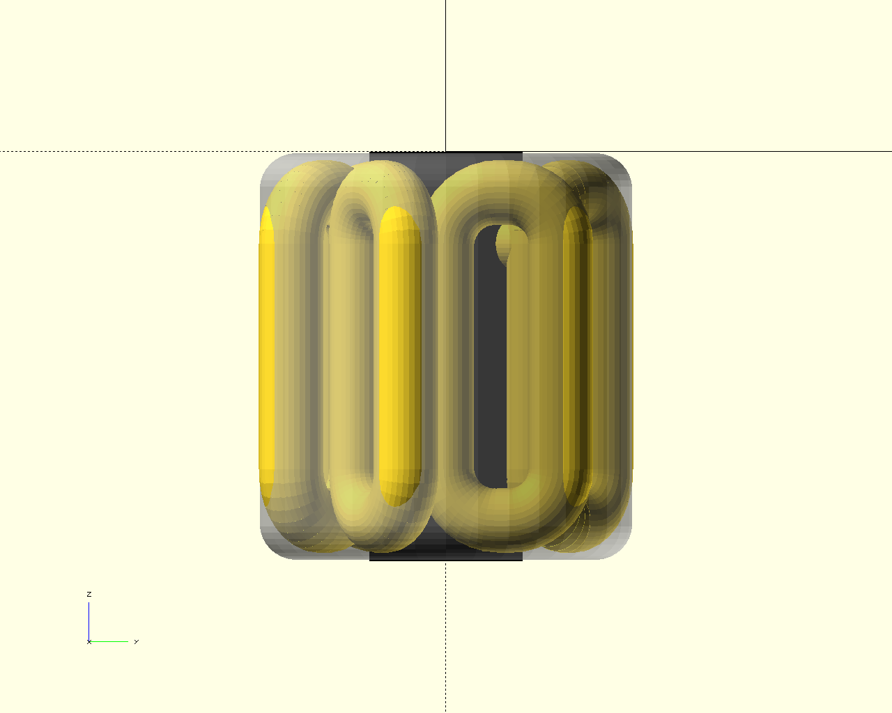
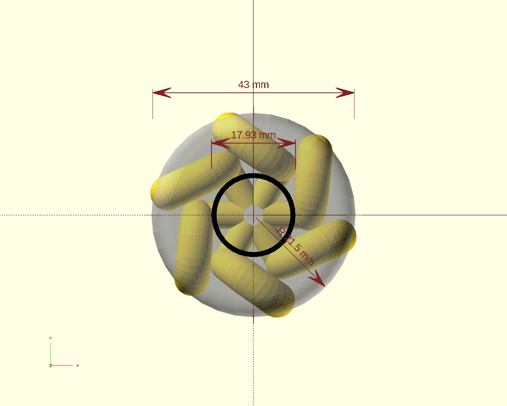
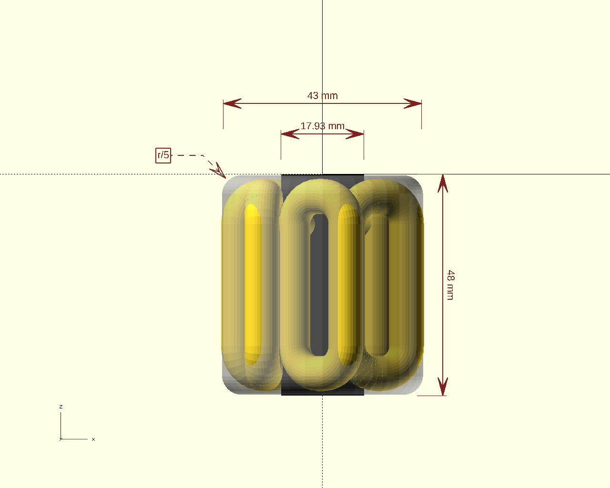
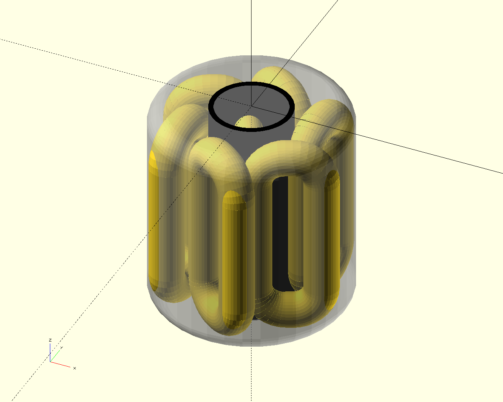

|
omdl
v0.9.5
OpenSCAD Mechanical Design Library
|
|
omdl
v0.9.5
OpenSCAD Mechanical Design Library
|
omdl is an OpenSCAD mechanical design library that provides open-source high-level design primitives with coherent documentation generated by Doxygen using openscad-amu.
With Doxygen, the code documentation is written within the code itself, and is thus easy to keep current. Moreover, it provides a standard way to both write and present OpenSCAD design documentation, compilable to common output formats (html, pdf, etc). With omdl, all library primitives are parametric with minimal, mostly zero, global variable dependencies and all library API's include markups that describe its parameters, behavior, and use.
Validation scripts are used to verify that the core operations work as expected across evolving OpenSCAD versions. This validation is performed when building and installing the library documentation). The library uses a common set of conventions for specifying data types and is divided into individual component modules of functionality, organized into groups, that may be included as desired.
Hello world script
The make_bearing_linear_rod operations can be used to transform 2D and 3D objects into 3D-printable linear rod bearings with arbitrary bearing-ball and rod sizes.
| right | top | front | diag |
|---|---|---|---|
|  |  |  |  |
Click image above to expand. See the end of docs_start.scad in the scope [ quickstart ] for the the dimension operations used in the above example.
omdl uses git for development tracking, and is hosted on GitHub following the usual practice of forking and submitting pull requests to the source repository.
As it is released under the GNU Lesser General Public License, any file you change should bear your copyright notice alongside the original authors' copyright notices typically located at the top of each file.
Ideas, requests, comments, contributions, and constructive criticism are welcome.
In case you have any questions or would like to make feature requests, you can contact the maintainer of the project or file an issue.
{kind=link}
{kind=link}
{kind=link}
{kind=link}